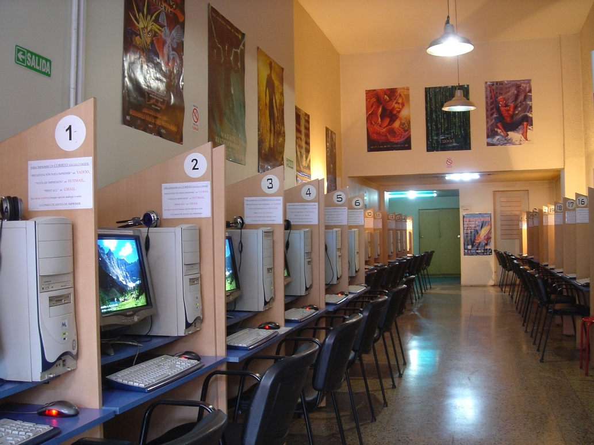

Los cibers nacieron cuando Internet irrumpió en nuestras vidas, tranformandose de la noche a la mañana en el centro de ocio de la juventud.
Los 90 fueron la época dorada de los cibercafés, locales que disponían de puestos con ordenadores para que la gente se conectase, trabajase o jugase pagando cierta cantidad de dinero
No había semana que no apareciese un cibercafé nuevo en la ciudad, y la competencia entre ellos era enorme pero la clientela lo era aún más.

¿Qué fue de los cibercafés?
Aunque con el paso del tiempo han disminuido tanto en número como en clientela. Muchos han cerrado, otros de han convertido en locutorios.
Los cibers no han desaparecido, simplemente se han mudado a las grandes ciudades y evolucionado en tecnología y centrandose más en los videojuegos.
En este apartado nos centramos en localizarlos dentro de Andalucía, donde dejaremos un punto por cada provincia.
GRANADA.
Hay varios locutorios por la zona, pero si quieres experiencia gaming de Alto Rendimiento, este es tu lugar:
MÁLAGA.
Hay 2 lugares más de gaming de Alto Rendimiento, al igual que locutorios.
SEVILLA.
Hay también varios locutorios por la zona, pero la experienxcia gaming de Alto Rendimiento en Arena Gaming, es inmejorable:
JAÉN.
Aunque aparece como cerrado temporalmente, sus puertas estan abiertas desde el 1 de Septiembre de 2025.
CÓRDOBA.
No tienen cibercafé, solo hay un locutorio en toda la ciudad, destinado a otros fines que no es la experiencia gaming de Alto Rendimiento.
CÁDIZ.
Al igual que Córdoba, tampoco tiene experiencia gaming de Alto Rendimiento, mantiene varios locutorios distribuidos por el Puerto de Santa María y Jeréz de la Frontera.
HUELVA.
Solo había un locutorio pero actualmente está cerrado permanentemente.
Por lo que si desea una experiencia gaming de Alto Rendimiento, o un locutorio con el que poder contactar con el extranjero, deberás moverte a otra ciudad.
ALMERÍA.
Actualmente queda solo un locutorio en toda la ciudad.